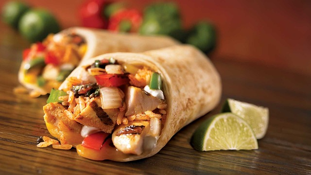

FlavorFrenzy
Über uns
Rezepte
Burrito

Rezept
Tortilla-Wraps
Reis
Bohnen
Fleich oder vegetarische/vegane Proteinwuelle(z.B Tofu)
Gemüse(Paprika,Zwiebeln,Tomaten)
Gewürze nach Geschmack(Chili, Knoblauchpulver etc.)
Guacamole oder Avocado
Käse
Frische Kräuter
Anleitung
Koche den Reis nach den Anweisungen auf der Verpackung und stelle ihn beiseite.
Brate das Fleisch oder die vegetarische/vegane Proteinquelle in einer Pfanne an. Würze es mit den gewünschten Gewürzen.
Bereite das Gemüse vor, indem du es schneidest und vorbereitest.
Erwärme die Tortilla-Wraps in einer Pfanne oder in der Mikrowelle, damit sie flexibel sind.
Nimm eine Tortilla und lege sie auf eine saubere Oberfläche. Verteile eine Schicht Reis in der Mitte der Tortilla.
Lege eine Schicht Bohnen auf den Reis.
Füge das Fleisch oder die vegetarische/vegane Proteinquelle hinzu.
Verteile das vorbereitete Gemüse gleichmäßig auf dem Burrito.
Füge Guacamole oder Avocado, Sour Cream oder Joghurt, Käse und Salsa oder Pico de Gallo hinzu.
Streue frische Kräuter nach Geschmack darüber.
Falte die Seiten des Tortilla-Wraps ein und rolle ihn fest auf, sodass die Füllung sicher eingeschlossen ist.
Wiederhole die Schritte 5-11 für die restlichen Zutaten, um weitere Burritos zuzubereiten.
Guten Appetit!